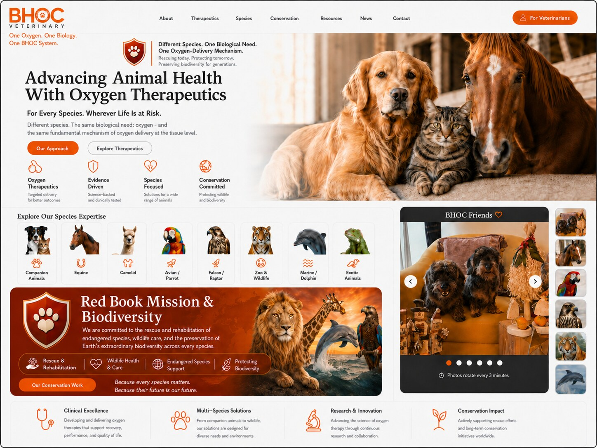

BHOC Veterinary — Advancing Animal Health With Oxygen Therapeutics
Oxygen is Life. We deliver oxygen precisely to every cell.

Our Mission. Their Future.
Rescuing today. Protecting tomorrow. Preserving biodiversity for generations.
Our Approach
Oxygen therapeutics, evidence-driven development, species-focused solutions and conservation commitment.
Veterinary Oxygen Therapeutics
BHOC Veterinary is developing evidence-driven oxygen-delivery science for companion, equine, avian, wildlife, marine and exotic animal health. BHOC is not a blood replacement.
Species Expertise
Companion animals, equine, camelid, avian, falcon and raptor, zoo and wildlife, marine and dolphin, and exotic animals.
Red Book Mission & Biodiversity
Protect Life. Preserve Species. From Nature. Through Science. Back to Nature.
News
BHOC Veterinary research, animal health and conservation updates.